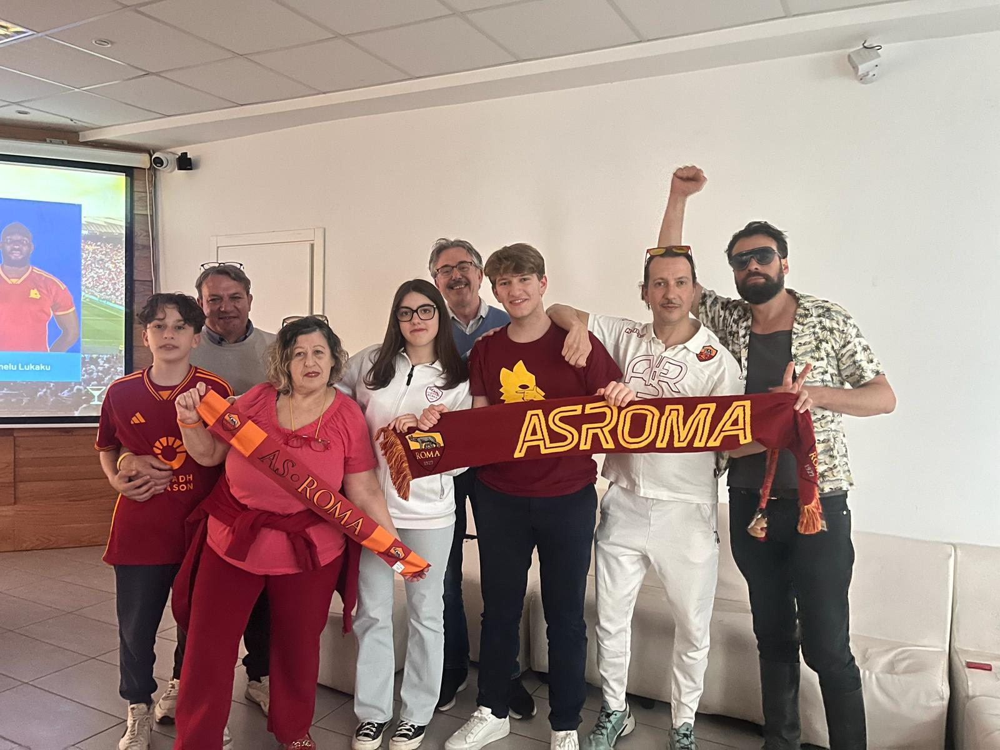
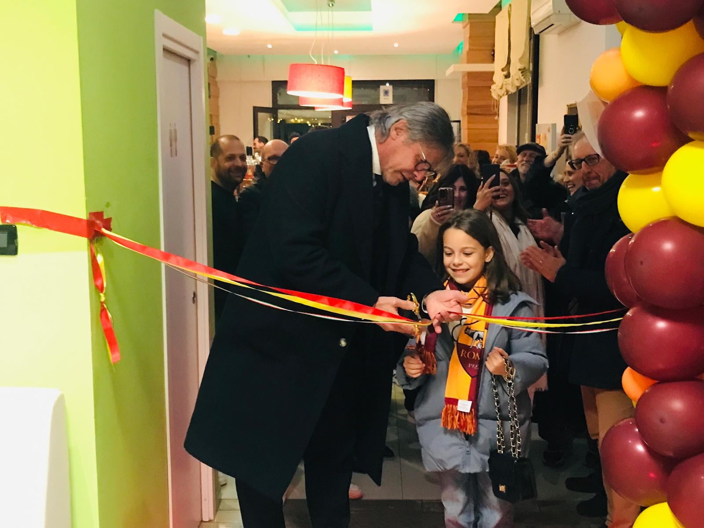
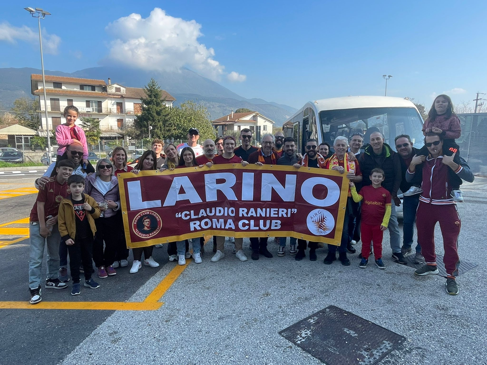

Nell’aprile 2024, a Larino, storica cittadina del Molise con profonde radici romane, è stato aperto il primo Roma Club ufficiale della regione. In meno di un anno, il nostro Club è cresciuto rapidamente fino a diventare uno dei Roma Club più numerosi d'Italia, con circa 200 soci.
Il Roma Club Larino è unico nel suo genere: è il primo Roma Club intitolato a Claudio Ranieri, leggenda della Roma e figura amatissima da tutta la tifoseria. Lo stemma del Club ritrae proprio Ranieri, ispirandosi a una sua celebre figurina Panini della stagione 1973-1974, quando il tecnico era ancora un giovane calciatore giallorosso.
Oggi il Roma Club Larino rappresenta con orgoglio la passione romanista non solo nel Molise, ma anche in tutta Italia e in diverse città europee. I suoi soci provengono infatti non solo dal borgo frentano, ma anche da altre regioni italiane e da varie nazioni europee, a testimonianza dell’amore senza confini per i colori della Roma.
Grazie a eventi, trasferte organizzate, iniziative sociali e una presenza digitale sempre più forte, il Roma Club Larino "Claudio Ranieri" si è posto l'obiettivo di affermarsi come un punto di riferimento per tutti i romanisti del centro-sud e oltre.


